Corn Tortillas | Cooked | Kids’ Corner | Oil-Free
As a recipe designer, I have come to learn just how special it is to make your food from scratch. There is something beyond gratifying about it. Making corn tortillas is nothing new in the culinary world, but it is something that I had never tackled before…until now. And trust me, I did my homework on this one. Besides, how much can wrong with only two ingredients? Truth be told—a LOT! Luckily, nothing ended up in the trash, and I will find creative ways to incorporate the experimental versions into our meals, but I did learn some good lessons through the experience.
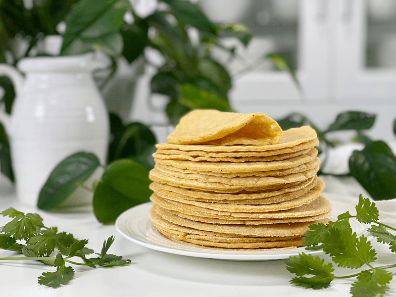
Today, I turned my studio kitchen into a corn tortilla factory. I plugged a Mexican music station into Pandora and was making tortillas to the beat of some lively maracas. I have no idea what they were singing about, but they sounded happy, which I found contagious. I was rolling, slapping, flipping, all while having a grand ols time. If you are new to making corn tortillas then I ask that you read through my entire post, because I share some valuable tips.
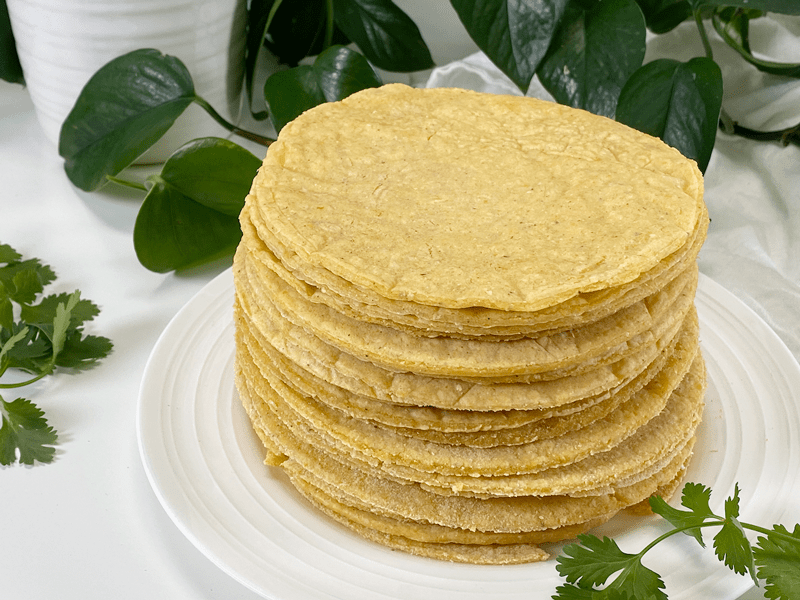
Corn tortillas are made from masa harina, which is a finely ground corn flour that is made from corn that has been dried, cooked in lime water, ground, and dried again. It is naturally gluten-free, except that some store-bought varieties are contaminated with gluten, so be sure to look for certified gluten-free on the packaging. Also, be sure to use ORGANIC masa, since most non-organic corn is genetically modified.
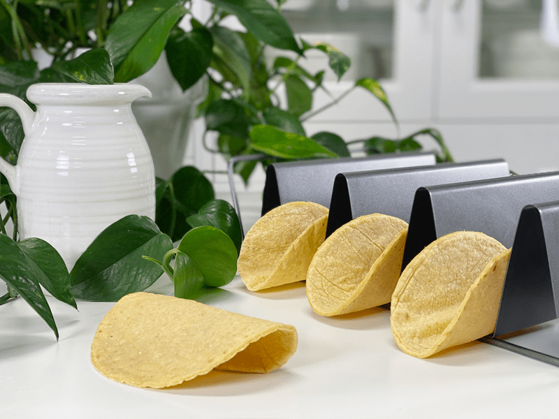
Tips & Tricks
- I use Bob’s Red Mill Organic Masa Harina Corn Flour for my tortillas, and the outcome is always consistent. Other brands may lead to wetter or drier doughs, so be aware of that. If your dough is on the wetter side, add small amounts of masa. If it is too dry, add 1 tablespoon of water at a time to reach the right texture.
- You do not need a tortilla press to make corn tortillas. I used a good ol’ rolling pin.
- If you see that the edges of your tortillas look a little cracked, add more water to the dough.
- If your tortillas do not puff, you need to knead the dough very well—this is very important. I timed myself for 2 minutes. You can try to press down the tortilla with a spatula while it is in the final cooking to force the puffing. Also, check your cooking time and the heat. Making tortillas is a matter of practice. Keep practicing, and you will get the hang of it.
- I cooked mine on a non-stick griddle with the temp set at 400 degrees (F).
- You can also make the dough ahead of time and store it in the fridge. When you are ready to make the tortillas, add a little water and knead again if it looks dry.
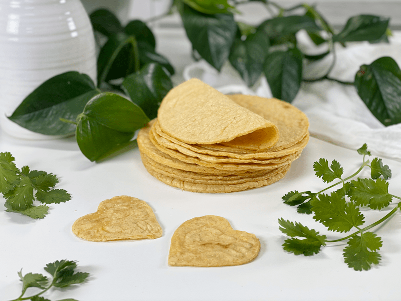
Kids’ Corner
If you have little ones roaming the house or perhaps grandchildren who come visit, this recipe could become very interactive. They can help roll them out, but better yet, they can have fun with a handful of cookie cutters. Now, I realize that tortillas typically don’t come in shapes of hearts, gingerbread men, or snowflakes — but think about how much fun it would be! I don’t have little ones in my life and I am a full-grown woman and I LOVE using cookie cutters — so there’s that.
 Ingredients
Ingredients
Yields 12 tortillas
- 1 1/2 cups Bob’s Red Mill Organic Masa Harina Corn Flour
- 1 1/2 cups boiling water
Preparation
Make the Dough
- In a medium-sized bowl, stir together the masa and hot water and mix with a spoon until the dough is formed. Then using your hands (once it’s cool enough to handle), knead the dough for 2 MINUTES, folding it over onto itself, over and over.
- The dough is ready when it’s smooth, no longer sticky, and forms a ball in your hand. The dough should feel a bit “springy,” like Play-Doh.
- Once ready, cover the bowl with a towel until ready to use and in between the times you take enough dough out to roll. We want to keep it moist.
Create the Tortilla Shapes: Rolling Pin Method
- Heat a cast-iron skillet or griddle over medium-high heat until very hot. If a drop of water sizzles immediately, the skillet is ready.
- I used my griddle with the temperature set at 400 degrees (F).
- Tear off a golfball-sized piece of dough, kneading it once again in your hands. Flatten in your hands then place on the parchment paper.
- Roll the dough out between two pieces of parchment paper until it is around 1/8-1/4″ thickness.
- Remove the top sheet of parchment and press the cutter into the dough, creating a perfect circle.
- I used the lid to one of my glass canisters.
- Gather the excess dough scraps and place them in the covered bowl of dough.
- If the dough has small cracks along the edges, the dough needs a bit more water kneaded into it.
- You will be repeating this process until all the dough is used up, but I found that I could comfortably cook 2 at a time before I rolled any more out. Again, the key is to prevent the dough from drying out (whether in the bowl or freshly rolled out).
Cooking the Tortillas
- Place the tortilla on the pan or griddle and cook for about 45 seconds. Turn over and continue to cook for another 45 seconds.
- Turn your corn tortilla over again and cook for another 15 seconds.
- At this point, press the tortilla with a large spatula, making sure to press over the entire tortilla. This will help initiate the puffing action.
- Cook until you see light-brown spots. Be careful that you don’t overcook, or they won’t be as pliable.
- The cooking time is about 1:45 minute’s total. Cook until the tortilla begins to puff.
- Overall the cooking time can differ based on what you are cooking them on and how thick or thin you rolled them out.
- As you take cooked tortillas off the griddle, stack them up and wrap them in a clean kitchen towel.
- Rest assured that if the tortillas seem a bit dry and brittle, the steam from stacking them will continue to soften them as you finish cooking the rest of the batch.
- Repeat with the remaining dough, gathering and re-rolling any scraps and stacking the tortillas under the towel.
Serving and Storage
- They are best when they’re just off the griddle and still warm. They can be refreshed before eating by searing briefly on both sides in a hot skillet.
- Excess tortillas can be frozen for up to 3 months. I used a ziplock bag, pressing all the air out as I sealed it.
- I am not keen on single-use plastics, so I wash and reuse my ziplock bags.
- Defrost at room temperature and refresh in a hot skillet as described.
-
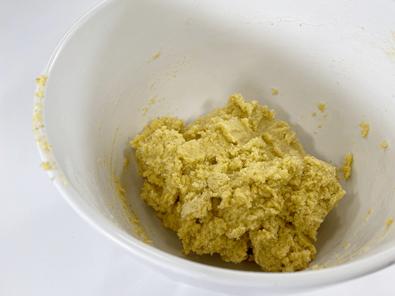
-
Starting off, mix the dough with a spoon so the hot water can cool enough to handle.
-
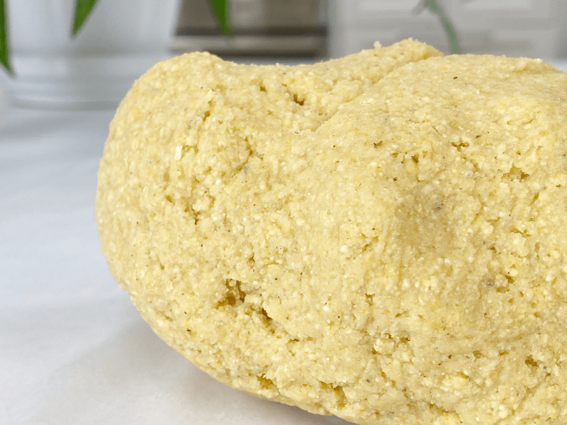
-
With your hands, knead the dough for at least 2 minutes.
-
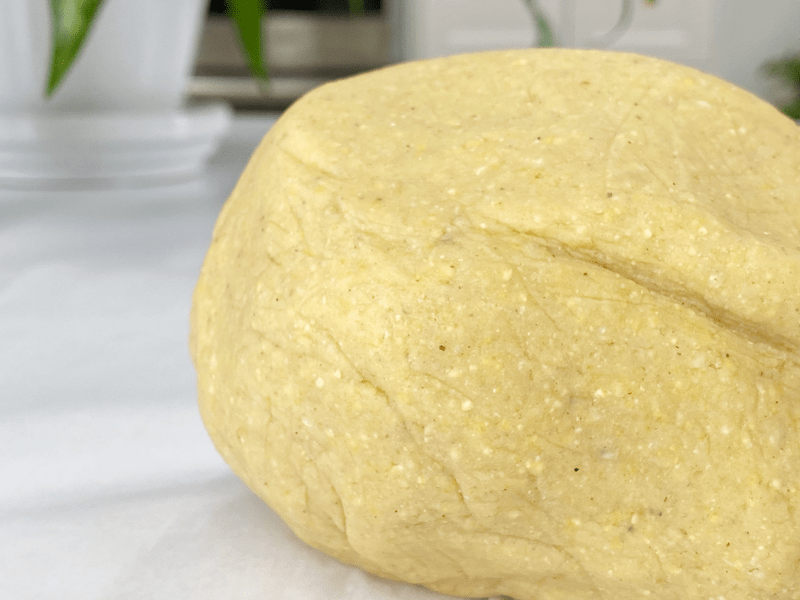
-
Once kneaded enough, it will look smooth (like in the photo) and feel like Play-Doh in your hands.
-
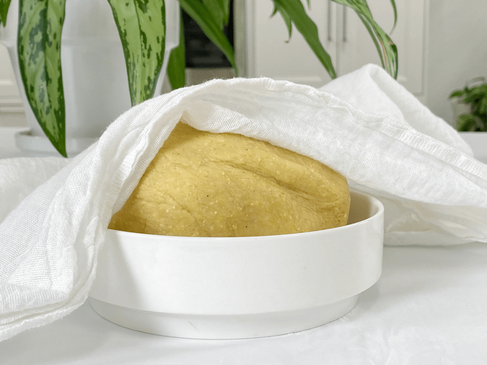
-
Keep the dough covered while rolling out the tortillas.
-
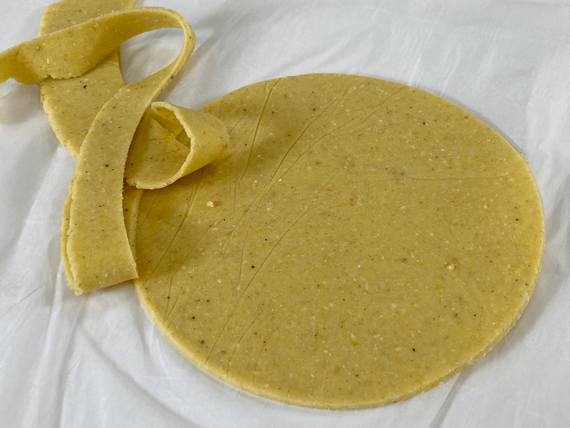
-
Cutting out the circle shape is optional. I used the lid to one of my jar canisters.
-
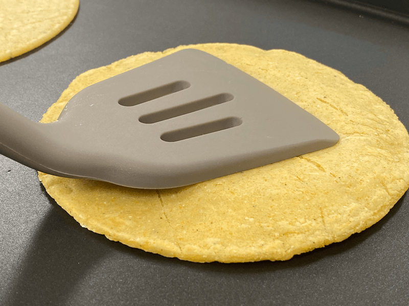
-
To help activate the puffing action, press the complete tortilla down flat.
-
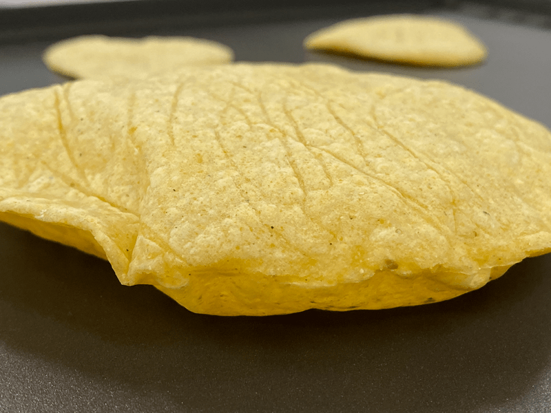
-
Soon it will puff, which is an indicator that it is done.
-
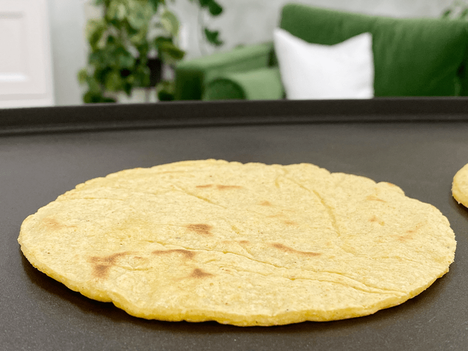
-
Also, watch for some small brown dots for doneness.
-
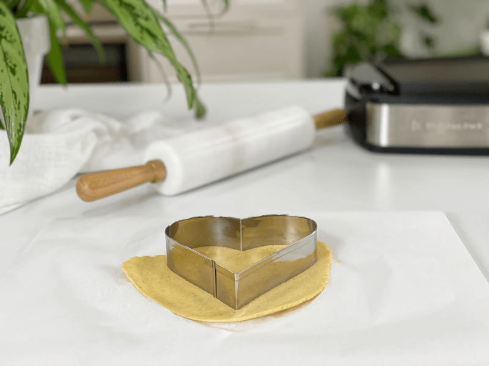
-
If you want to have extra fun, use cookie cutters to create different shapes. Of course, they won’t work for tacos then, but…!
-
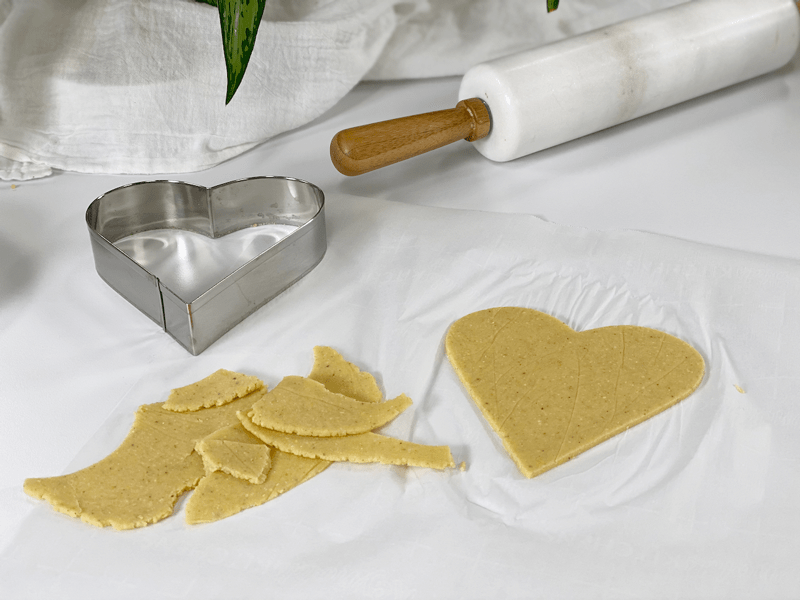
-
Who wouldn’t love eating a heart-shaped corn tortilla?
-
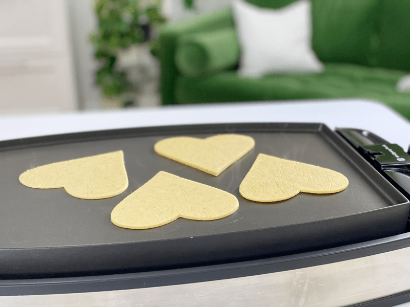
-
Regardless of the shape, cook the same way.
-
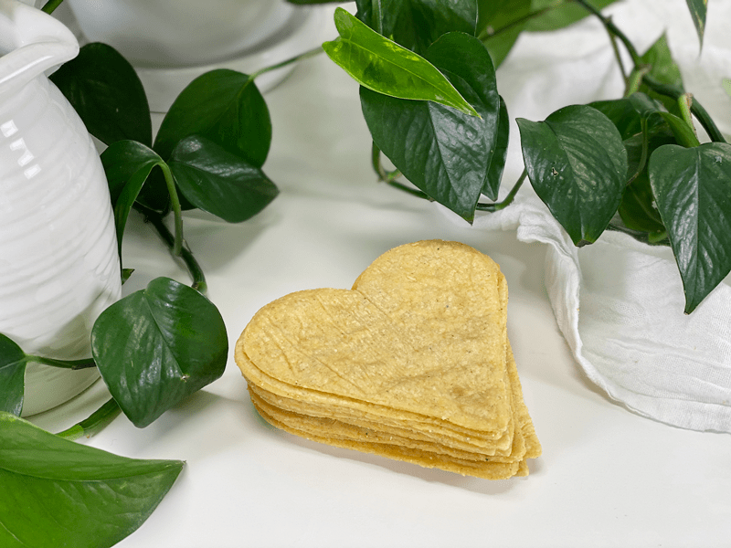
-
They are just too adorable!
© AmieSue.com